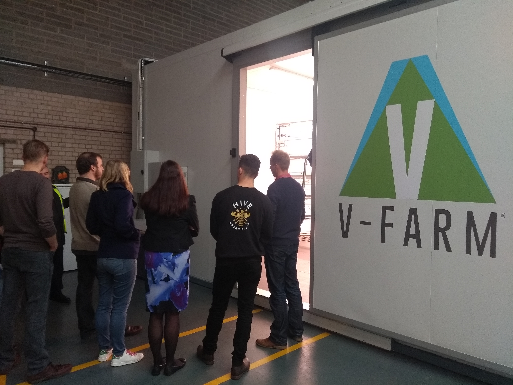

Choosing and Using Technology
Presented by: Michael Thomas Ratcliffe: Mike@Aquaponicslab.org
Nuffield Travel: How my view of Technology changed



Presented by: Michael Thomas Ratcliffe: Mike@Aquaponicslab.org
